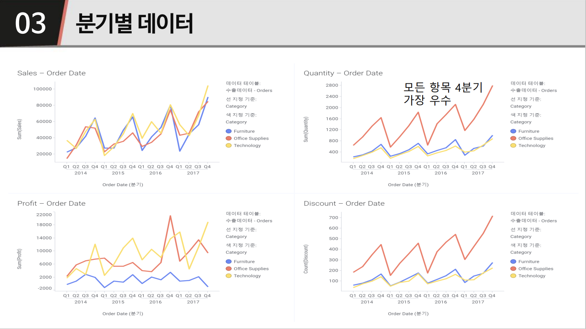
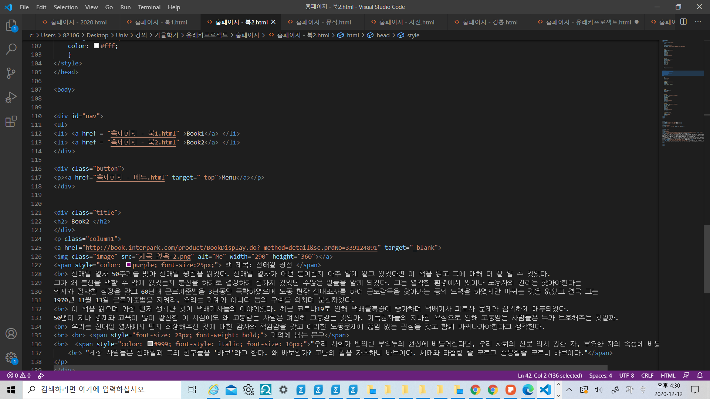

주어진 데이터를 갖고 시각화 분석을 진행해보았습니다.
TIBICO Spotfire을 이용하여 데이터를 시작화하는 방법을 공부하였고 배운 것들 활용하여 국민기업이라는 가상 기업의 수출전략을 세워보았습니다. 배움에서 멈추지 않고
직접 적용하며 스팟파이어를 활용해보니 다른 강의의 과제를 수행할 때의 데이터도 스팟파이어를 활용해서 시각화해볼 수 있었고 앞으로 많이 사용할 것 같다는 느낌을 받았습니다.
시각화 분석을 진행하며 많은 것을 배울 수 있었습니다.

html 을 활용하여 홈페이지도 만들어 보았습니다. 복잡하지만 새로운 것들을 많이
알게 되어 좋고 재밌는 경험이었습니다. 과제로 끝나지 않고 더 공부해서 더 완벽한 홈페이지를 만들어보고 싶은 욕심이 생겼습니다.